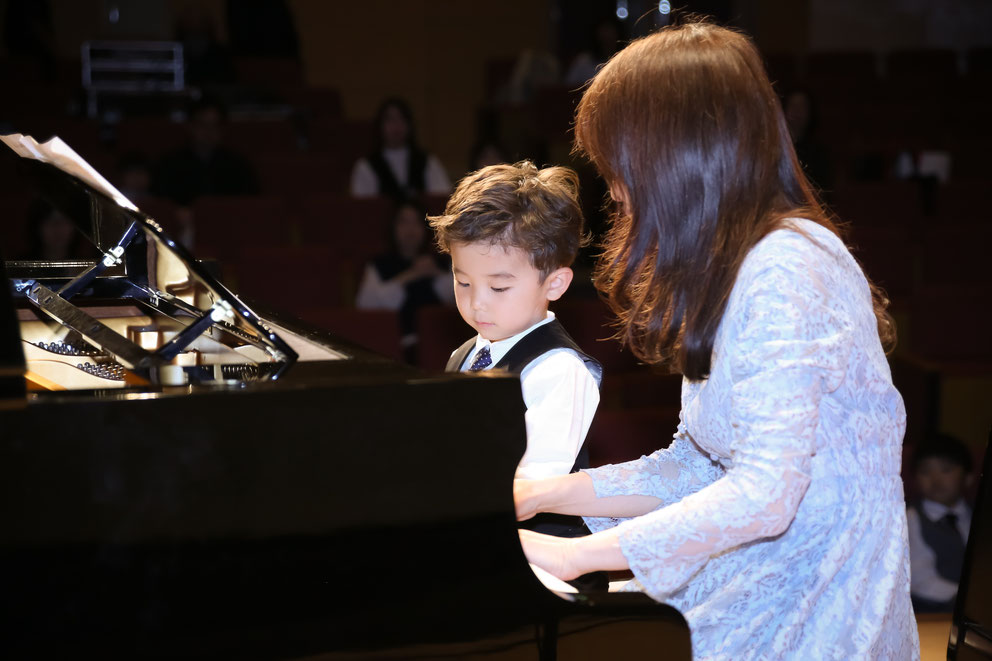
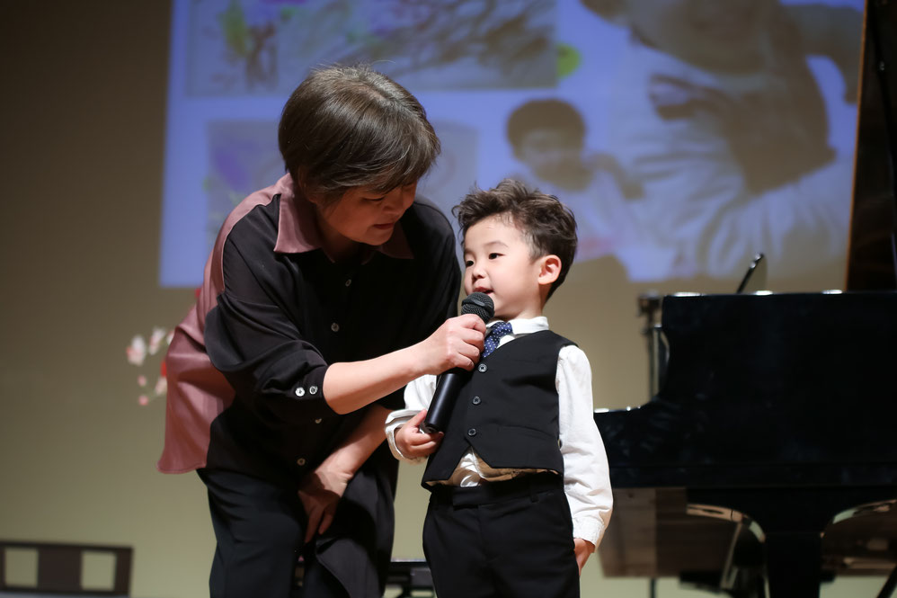
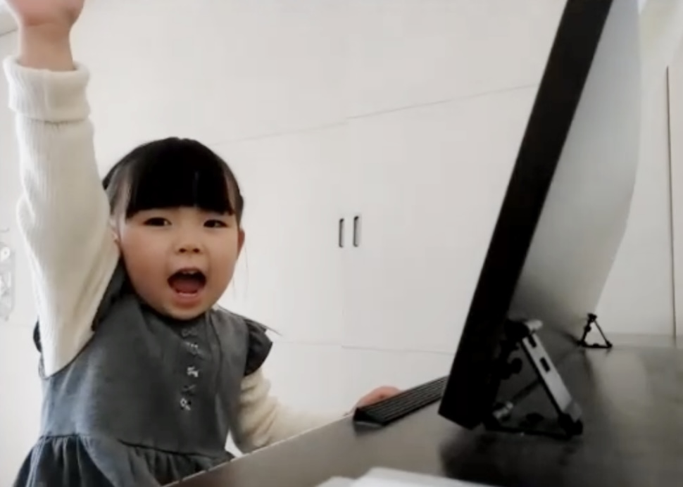
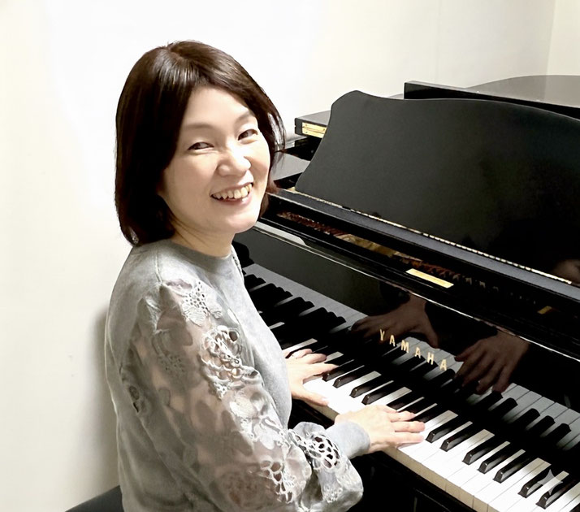
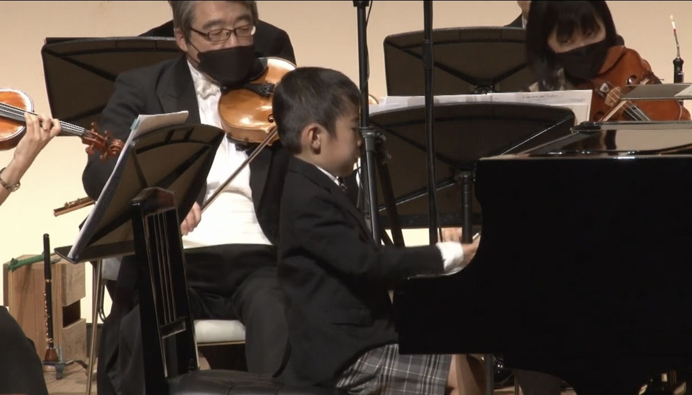
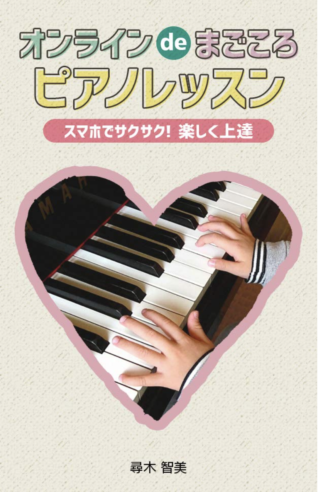

「弾けた！」が、自信になる。
1レッスンに、1つの感動を。
福岡市中央区・筑紫野市で30年以上の指導実績。
子どもから大人・シニアまで、一人ひとりに合わせたレッスン。


「弾けるようになりたい！」
その強い思いに、本気で応えます。
たずのきピアノ教室 T MUSIC STUDIOは、福岡市中央区梅光園と筑紫野市朝倉街道にある、 現役プロ講師による個人レッスンのピアノ教室です。
導入期から「楽譜を読めるようになる」ための知識・テクニック、 「きちんと弾ける」ための基礎力をしっかりと身に付けていきます。 1年目で楽譜が読めるように、2年目にはブルグミュラーが弾けるようになることを目指します。
月3回の個人レッスンに加え、月1回のソルフェージュオンライングループレッスンを組み合わせた独自のカリキュラムで、 「人の心を動かす」音色が出せるよう、最初から「音」にこだわったレッスンを行っています。
導入期から読譜力・テクニックをしっかり指導。「読めて弾ける」一生ものの力を育てます。
月3回の個人レッスンと月1回のグループレッスンで、リズム感・聴く耳・基礎力を育てます。
最初から「音」にこだわったレッスン。脳科学も取り入れ、ピアノを通じて生きる力も育みます。

2歳児からの完全個人レッスン。ピアノを使ってワーキングメモリーを鍛え、 脳を育てるまったく新しいピアノレッスンです。家にピアノがなくても大丈夫。
7,500円/月（30分×月3回）
個人レッスン＋ソルフェージュグループレッスンの組み合わせで、 読譜力・リズム力・テクニックを丁寧に育てます。オンラインレッスンも対応。
10,000円〜/月

月1〜2回、自分のペースで通えるコース。レッスン再開、イベントのための1曲、 憧れのピアノデビューなど、一人ひとりに合わせた内容で組み立てます。
5,000円/1レッスン60分

指を動かすことで脳を活性化。簡単な運動や体操もレッスンに取り入れ、 同じ趣味の仲間と楽しいグループレッスンで、イキイキした毎日を。
5,000円/月（グループ60分×月2回）
その他、コンクール対応レッスン（20,000円/月）、
ピアノ指導者向けサポートコース、
動画ワンポイントアドバイスもございます。
体験レッスン 3,000円 ／ 入会金 5,000円
詳しくはお気軽にお問い合わせください。
代表・主宰
Tomomi Tazunoki
4歳でエレクトーンと出逢い、小3でピアノに転向。音大でピアノを専攻しながらオーケストラにも参加。 大手楽器店講師を経て、福岡の地でピアノ教室を開講して10年以上。
「人生経験が『音楽になる』」という恩師の言葉を胸に、 ピアノだけでなく「生きる力」も育むレッスンを実践。 娘をミュージカル女優に育てた経験と、30年以上のピアノ指導歴を活かし、 脳科学や心理学も取り入れた独自のメソッドで指導しています。
2020年には電子書籍を出版し、Amazonベストセラー1位を獲得。 現在は子どもたちの指導の他、全国の指導者向け講座も開催しています。
必ず「弾けるように」なるよう、原因と解決策を見つけてくださるので必ず上達します！
ピアノだけでなく「生きる力」が身に付き、志望校にも合格。幼少期からのレッスンのお陰です！
上手になりたい方には絶対にオススメ。「音楽を一生の友」にしたいなら尋木先生です！

リトルスプリングコンサートやクリスマスコンサートなど、
「観て楽しい、参加して楽しい、また聴きたくなるコンサート」を開催しています。
プロの演奏家とのアンサンブルなど、本物に触れる機会も大切にしています。

2020年1月に出版した電子書籍。「音楽」「幼児教育」など3つのカテゴリで Amazonベストセラー1位を獲得しました。
また、Udemyにて「たった10分毎日このトレーニングをするだけでピアノが上達する！」を販売、 400名以上の方にご購入いただいています。
Amazon ベストセラー1位携帯電話：090-1083-9150（留守番電話の場合はメッセージをお願いいたします）
体験レッスンの前には、スムーズに進めるための
「ZOOM無料カウンセリング」を行っております。
お母様の「思い」をたくさんお聞かせください。
朝倉街道教室
092-555-6857
梅光園教室
092-707-3321
携帯
090-1083-9150
24時間いつでも受付中。2〜3日以内にご返信いたします。
体験レッスンを受けられても、入会を強制することはございません。安心してお問い合わせください。
当教室は「福岡市習い事応援事業」登録教室です。